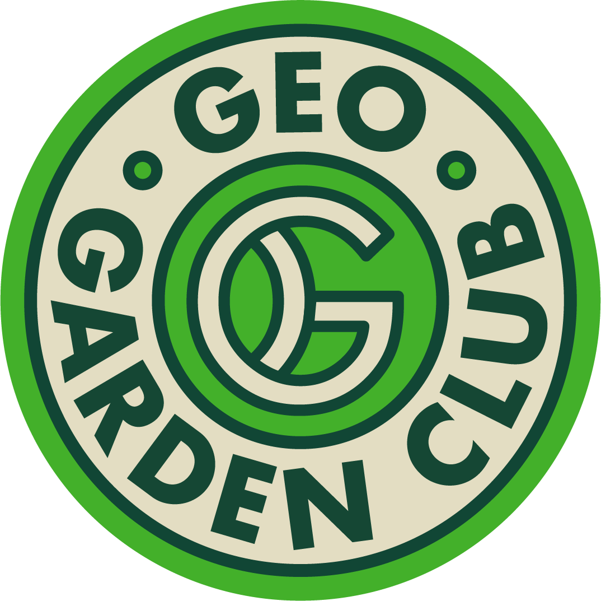
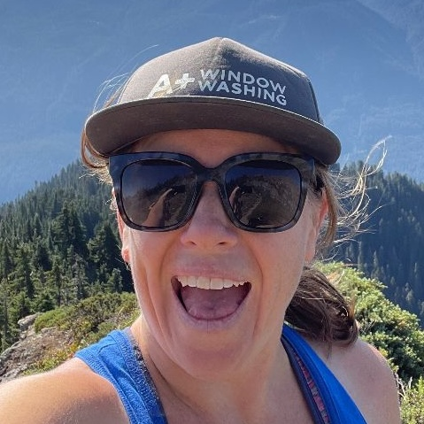
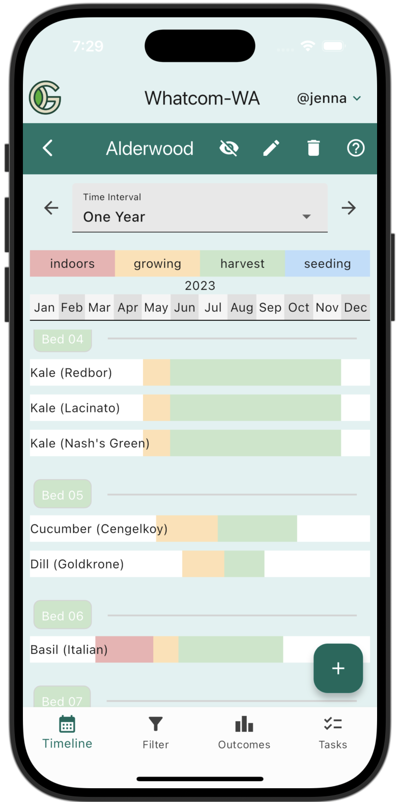
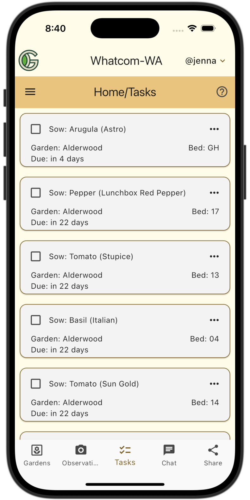
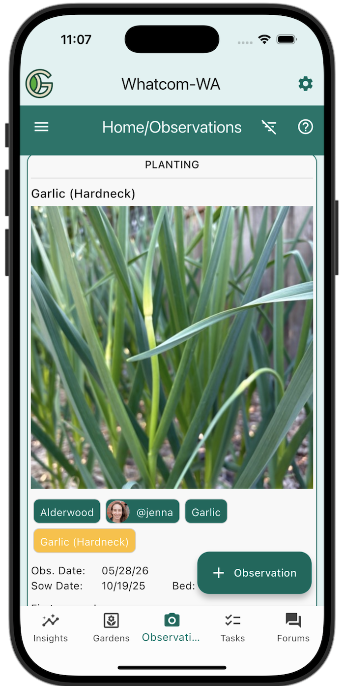
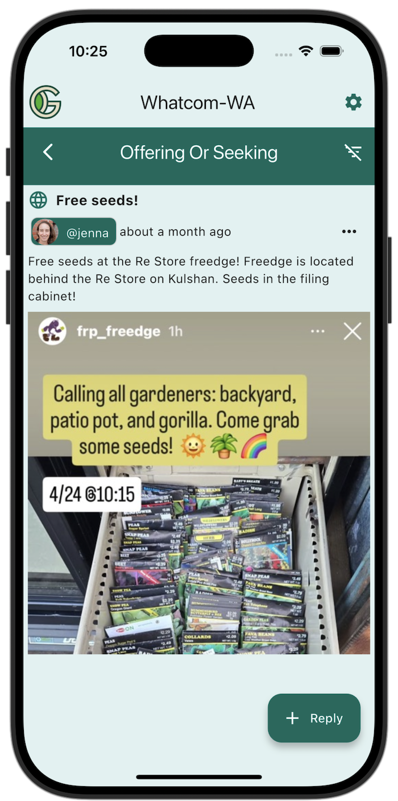
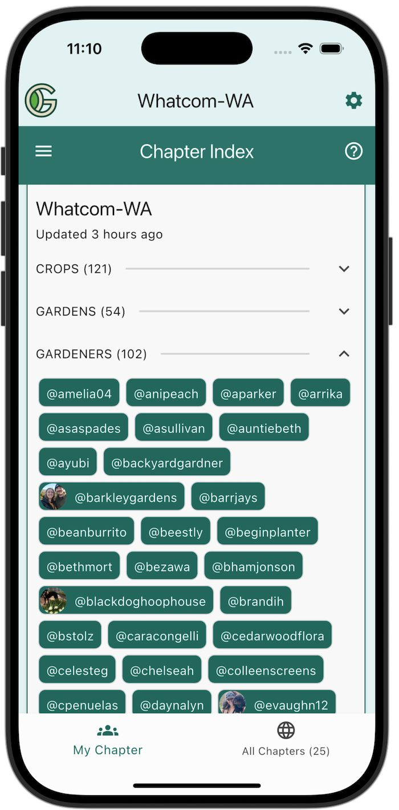

Grow and share more food.

Why GeoGardenClub?
So you can grow more food with help from gardeners near you.
GeoGardenClub combines a local gardening community, garden planner, planting calendar, and multi-season garden journal in one app.
Learn what works best in your area, plan your garden, track progress across seasons, and share resources.
Join your local chapter today


First three months free, then $4.99/month or $44.99/year (25% savings!)
Reviews from real gardeners
I love being able to look at other gardens all over the country! It's so cool to be able to share observations and learn from other gardeners!

I really enjoy reading the observations and other people’s gardens. It informs me and gives me new ideas!
I like to use the filter function to find where I planned to plant certain crops rather than scrolling through all my beds to try and find where I put things.
As a married couple with distinct gardening interests we love that we can share a garden in the app and post data individually.
With GeoGardenClub, everything lives in one place! I have the visual representation of how long the crop will be in the bed (that I can easily edit on the fly), and if I want data on the crop, I can click on it.
I love making observations in the GGC app! Finally, a place to brag, facepalm, or send messages to future self.
Plan Better
Copy plantings from previous seasons or other gardeners to quickly and efficiently plan your garden.


Manage Easier
Stay on track with our smart task list, keeping your plans automatically up to date.
Harvest More
Record observations and yields to track success of each planting and improve your garden next year.


Waste Less
Share and trade surplus seeds, harvests, tools, and materials with other local gardeners.
Build Community
Improve your gardening skills with your neighbors and make new friends.
